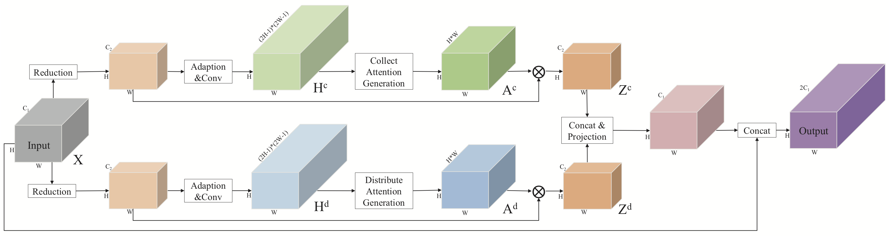
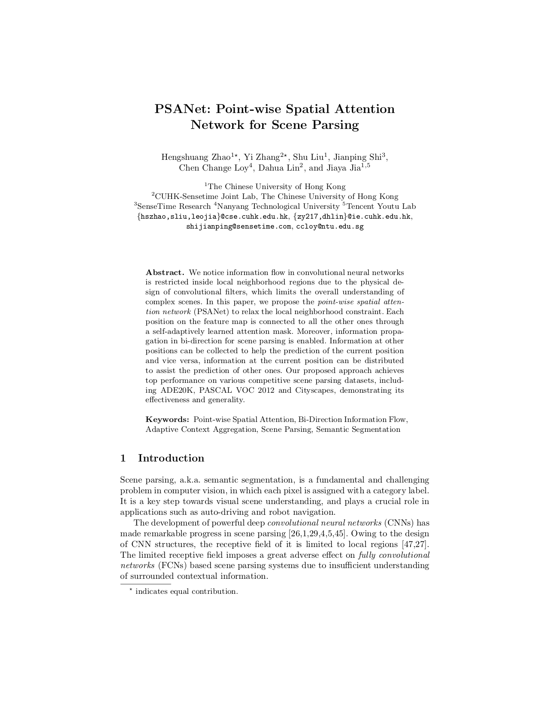
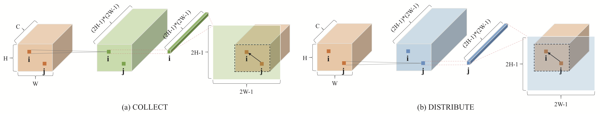
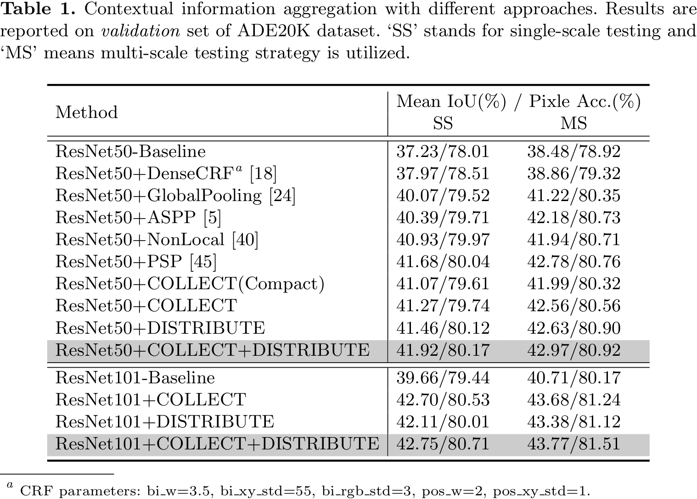
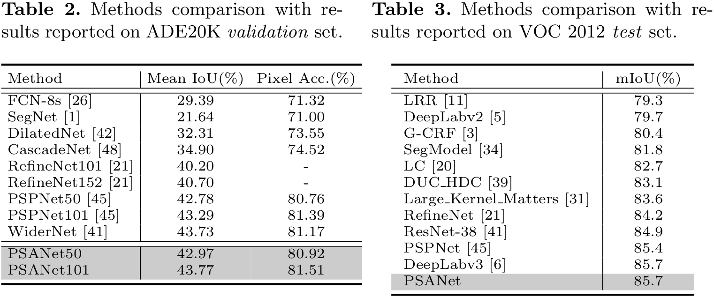
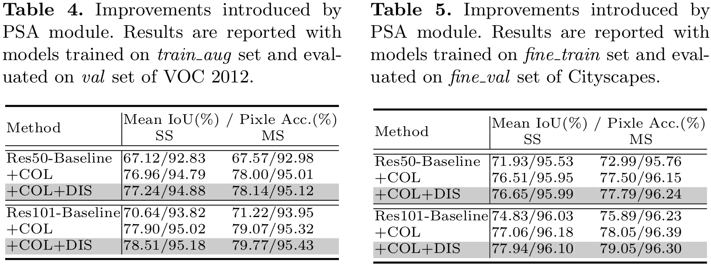
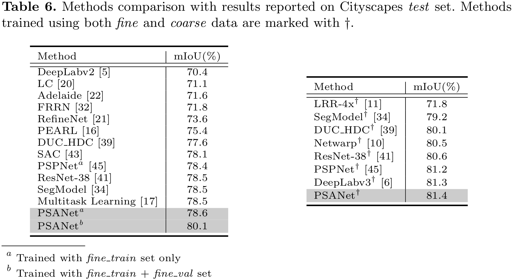
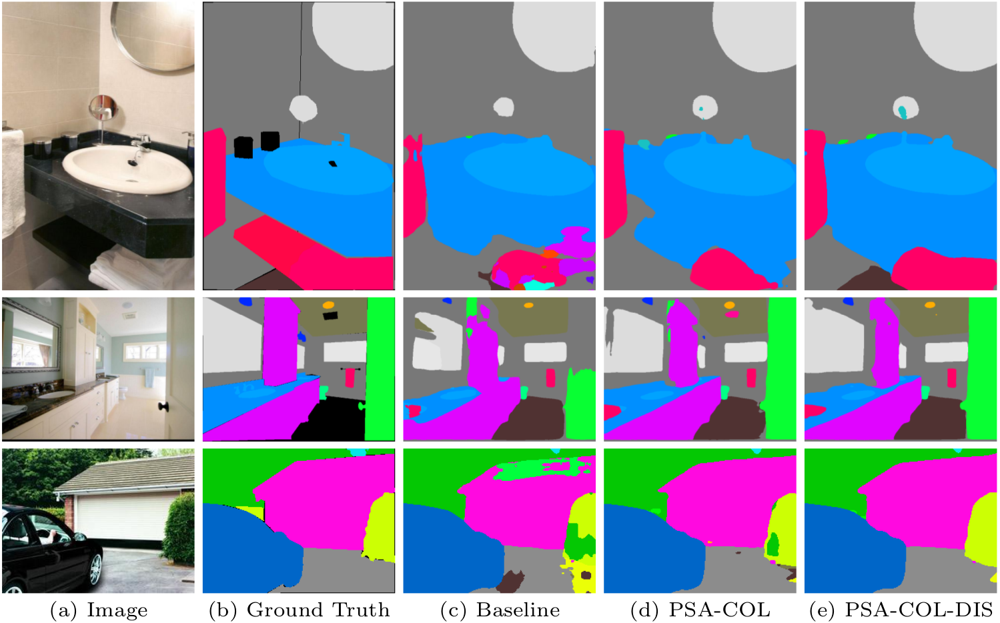
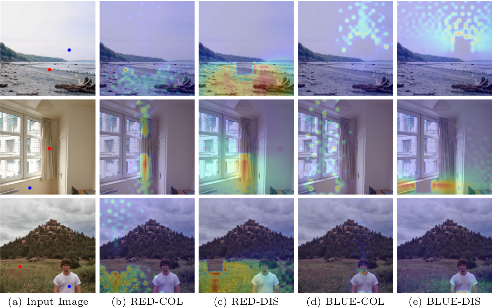

Hengshuang Zhao1* Yi Zhang2* Shu Liu1 Jianping Shi3 Chen Change Loy4 Dahua Lin2 Jiaya Jia1,5
1 The Chinese Univeristy of Hong Kong
2 CUHK-Sensetime Joint Lab, The Chinese Univeristy of Hong Kong
3 SenseTime Research
4 Nanyang Technological University
5 Tencent Youtu Lab [* indicates equal contribution]
|  |
|
Architecture of the proposed PSA module. |
Abstract
We notice information flow in convolutional neural networks is restricted inside local neighborhood regions due to the physical design of convolutional filters, which limits the overall understanding of complex scenes. In this paper, we propose the point-wise spatial attention network (PSANet) to relax the local neighborhood constraint. Each position on the feature map is connected to all the other ones through a self-adaptively learned attention mask. Moreover, information propagation in bi-direction for scene parsing is enabled. Information at other positions can be collected to help the prediction of the current position and vice versa, information at the current position can be distributed to assist the prediction of other ones. Our proposed approach achieves top performance on various competitive scene parsing datasets, including ADE20K, PASCAL VOC 2012 and Cityscapes, demonstrating its effectiveness and generality.
Download
|  | "PSANet: Point-wise Spatial Attention Network for Scene Parsing"
Hengshuang Zhao*,Yi Zhang*,Shu Liu,Jianping Shi,Chen Change Loy,Dahua Lin,Jiaya Jia. European Conference on Computer Vision (ECCV), 2018. Ranked [Paper] [Supp] [Bib] [Slides in WAD2018@CVPR2018] |
Architcture
|  | |
|
Illustration of Point-wise Spatial Attention. |
Network structure of ResNet-FCN-backbone with PSA module incorporated. Deep supervision is also adopted for better performance. |
Performance
|  |  |
|  |  |
Visualization
|  |
|
Visual improvement on validation set of ADE20K. The proposed PSANet gets more accurate and detailed parsing results. 'PSA-COL' denotes PSANet with 'COLLECT' branch and 'PSA-COL-DIS' stands for bi-direction information flow mode, which further enhances the prediction. |
|  |
|
Visualization of learned masks by PSANet. Masks are sensitive to location and category information that harvest different contextual information. |
Video
Demo video processed by PSANet(with IBNNet and PSPNet) on BDD dataset:
Last update: Aug. 18, 2018